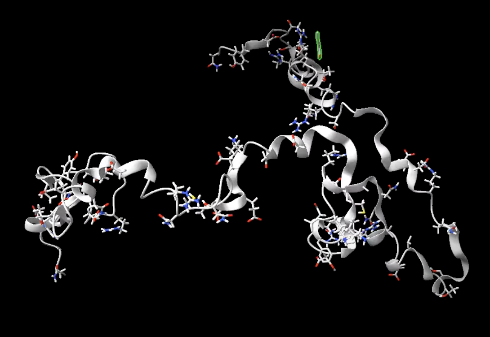
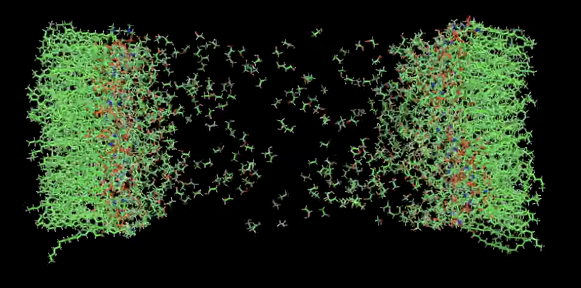
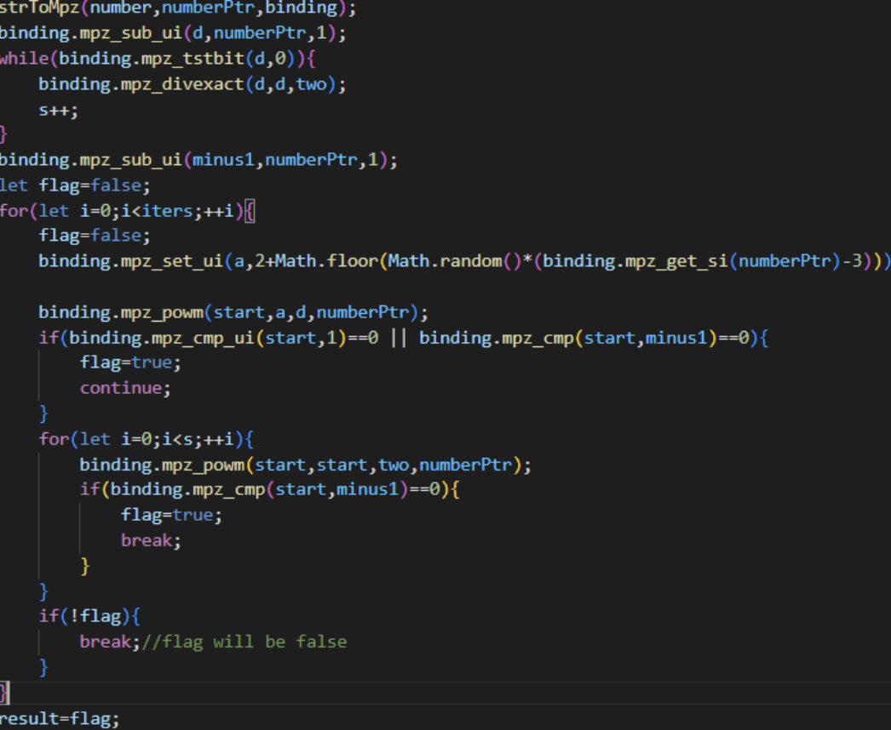
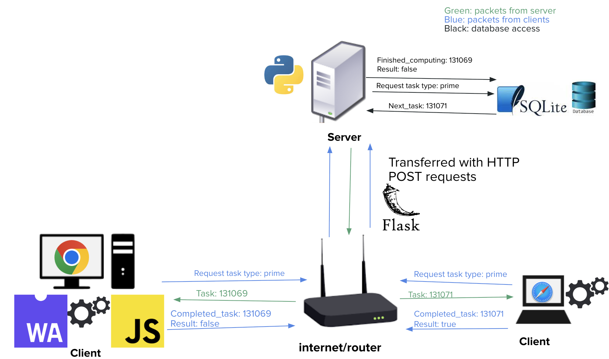

About Me
I am an incoming student to the University of Washington for Computer Science.
My experiences and interests lie in a combination of computational and synthetic biology.
My ultimate goal in life is to find cures to incurable diseases and revolutionize what
humans can do with biology.
GitHub: https://github.com/dglgit
My favorite experiences include:
- Starting and leading Kentucky's first iGEM team to an international Gold medal, raising $30,000+, discovering new ways PFAS (fluorine-containing forever chemical pollutants) might cause cancer, and engineering organisms to detect PFAS
- Extending the capabilities of Virtual Cell to multiple cells to study the possibility of using quorum sensing for biosensor designs (currently under review for publication)
- Raising antibiotic resistant bacteria with 2 labmates at the Summer Science Program and identifying a new protein conferring that resistance
- Manually annotated 60 Clinical Case Reports and extracted relevant metadata as an intern at UCLA
- Once improved a data processing algorithm by 600x while interning for Ericsson
Projects
Melting proteins in Molecular Dynamics
I created a script to simulate proteins at different temperatures. It includes one extreme melting reaction at 500K.
View on GitHub

Membrane simulation
I created a script to simulate a phosopholipid membrane in ethanol to see if I could see it tear apart.
View on GitHub

Screen Saver Simulator
I was inspired to make this at the Stockholm Junior Water Prize in 2022 when 5 of us spent 30 minutes watching a channel logo bounce on a screen, waiting for it to hit the corner. I forgot to upload it back then and the laptop I coded it on broke, so I have recreated it here.
View on GitHubWeb Compute Framework
The purpose of this project is to create a framework and a web client that allows anyone to help compute the next Collatz conjecture number or help find the next prime number (or any other task that can be distributed among multiple machines) simply by visiting a website
View on GitHub 
Bio LLMs
I made a RAG model based on Gemini Flash 2.0 with the standard textbooks used in USABO. You can ask it bio questions and it can provide text citationst to support its answers. I also attempted to have an LLM scrape USABO solution PDFs for highlighted answers with moderate success. Textbooks and data not provided.
View on GitHubMMPBSA.py pipeline
I created an automated pipeline to perform MMPBSA/GBSA calculations on a protein-ligand complex using OpenMM and Ambertools. The only files you need are PDBs of the protein and ligand, which can be split from a PDB containing the bound complex. The ligand must be already docked.
View on GitHubContact
Email: dlin26@uw.edu
LinkedIn: https://www.linkedin.com/in/douglas-lin-6096802ab/